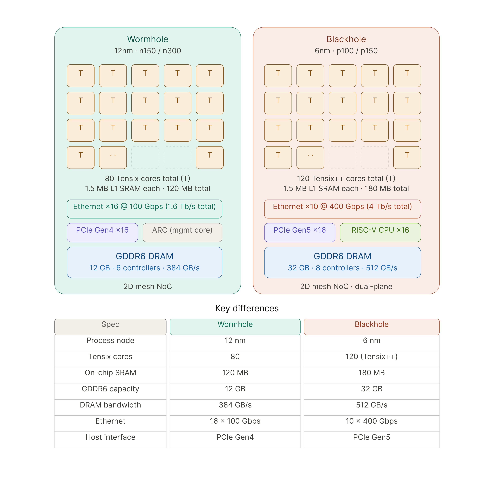

Hardware Overview
Tenstorrent hardware is designed to accelerate modern AI workloads through a scalable, high-performance architecture that combines specialized compute cores, efficient memory systems, and high-bandwidth interconnects.
This page provides a high-level overview of Tenstorrent hardware, including core architectural components, chip families, and system configurations.
What Makes Tenstorrent Hardware Different
Tenstorrent hardware is built around a few key principles:
Scalable architecture across single and multiple devices
High compute density optimized for machine learning workloads
Efficient data movement using on-chip and inter-chip networks
Tight integration between hardware and software stack
These principles allow Tenstorrent systems to handle both inference and training workloads efficiently.
Core Architectural Components
At the heart of Tenstorrent hardware are several key building blocks:
Tensix Cores
Tensix cores are the fundamental compute units responsible for executing workloads. They are designed to efficiently handle tensor operations, parallel computation, and data movement.
Each core can:
Execute compute kernels
Manage local data
Coordinate with other cores
This enables highly parallel execution across the chip.
Memory Architecture
Tenstorrent uses a multi-level memory architecture to support high-throughput workloads.
Key characteristics include:
On-chip memory for fast access and low latency
Off-chip high-bandwidth memory for large datasets
Explicit data movement control for performance optimization
Efficient memory usage is critical for maximizing performance, especially in large models.
Network-on-Chip (NoC)
The Network-on-Chip connects cores, memory, and other components within a device.
It enables:
Fast data transfer between cores
Parallel communication paths
Scalable execution across the chip
The NoC is essential for coordinating workloads and avoiding bottlenecks.
Chips
Tenstorrent develops multiple generations of AI accelerator chips, each improving performance, scalability, and efficiency.
Two key chip families are:
Wormhole
Wormhole is designed for scalable AI workloads with strong support for multi-chip configurations. It focuses on high-throughput execution and efficient interconnects.
Blackhole
Blackhole represents a newer generation with improved performance, architecture, and efficiency. It builds on previous designs and introduces enhancements in compute, memory, and communication.
You can compare these architectures in the diagram below.
{kind=link}

Wormhole vs Blackhole architecture comparison
Systems
Tenstorrent hardware is available not only as individual chips but also as complete systems.
Examples include:
QuietBox — compact system for development and smaller workloads
LoudBox — high-performance system for large-scale workloads
These systems integrate multiple chips and provide a ready-to-use environment for running AI models.
Scaling Across Devices
One of the strengths of Tenstorrent hardware is its ability to scale.
You can:
Run workloads on a single chip
Scale across multiple chips
Scale across multiple systems
This makes it suitable for everything from local experimentation to large-scale deployment.
How Hardware Fits Into the Stack
Tenstorrent hardware works closely with the software stack:
TT-NN provides high-level APIs for model execution
TT-Metalium enables low-level control over hardware
Runtime and tools manage execution, profiling, and optimization
Together, they form a vertically integrated system.
When to Use Hardware-Level Knowledge
Understanding hardware is especially important if you:
Optimize performance-critical workloads
Develop custom kernels
Work with memory and data movement
Debug low-level execution issues
For most users, high-level APIs are sufficient, but deeper knowledge unlocks maximum performance.
Next Steps
To dive deeper into Tenstorrent hardware, explore:
Understanding these components will help you better optimize and scale your workloads.